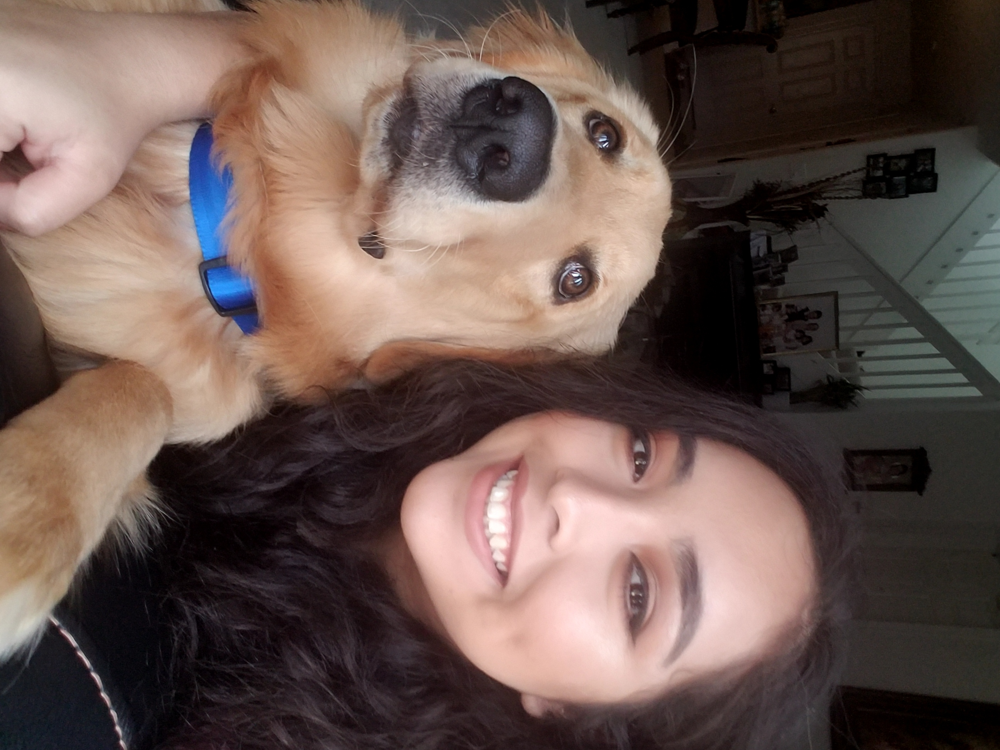

About Me. . .
Take a look around my website; made by yours truly. This page is mostly an 'About Me'. Lets see . . . I was born and raised in Naples, FL. I attended Lake Park Elementary, Gulfview Middle, and Naples High School. I was enrolled in honors/AICE classes. I ran cross-country and track. I played for my schools orchestra; I played the violin. I volunteered for math teachers in Naples High, and I also volunteered for NCH hospital one summer.Other volunteering oppurtunies took place with clubs that I was involved in, such as C.O.R.E club and F.F.E.A. Core was to spread awareness of drugs and alchol abuse. FFEA was to help future educators help their community. I am currently atttend FGCU where I am pursuing a math major. 